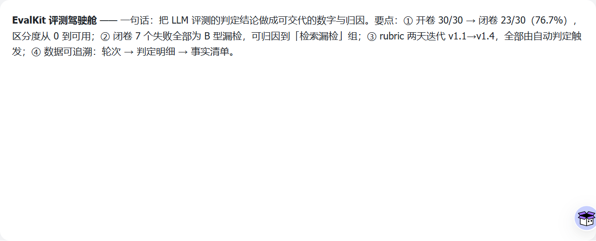

EvalKit · LLM 输出评测工具
同一个被测对象、同一套评分标准：先把它量出 7 个失败，再用一次预注册实验把失败修到 1 个。
30 个测试 case · 四维度 rubric · 模型只答事实、代码算分数
开卷 30/30（区分度为 0）→ 闭卷 23/30（7 个失败全部归检索）→ 改检索后 29/30
一个 AI 应用上线后，只有三个问题必须回答
① 它现在好不好
已回答
开卷 30/30、闭卷 23/30。但开卷全对不是好消息——答案就在眼前，区分度为 0。
② 改版后变好还是变坏
用实验回答
预注册 → 单变量改动 → 闭卷 23/30 → 29/30，检索命中率 50% → 86.4%。
③ 坏在哪一类
已定位
7 个失败全部是"漏检"（文档有答案没找到），编造类 0 个。锅在检索，不在模型。
开卷全对不代表模型好——把材料拿掉 7 条立刻挂掉，问题出在信息供给，不在模型能力。
三轮有效评测的核心结果
开卷（全文注入）
30/30
通过率 100% · 区分度为 0
闭卷（3 相关 + 3 干扰）
23/30
通过率 76.7% · 7 个失败全是漏检
闭卷 · 改检索后
29/30
通过率 96.7% · 检索命中率 50% → 86.4%
失败归因（闭卷基准轮，30 条按检索结果分三组）
检索命中组 11 条 0 失败、应拒答组 8 条 0 失败，7 个失败全部集中在检索漏检组（11 条挂了 7 条）——材料给到了就全对，锅在检索，不在模型。
还有 4 条检索漏检却答对了：其中 3 条是因为同一知识点在文档多处重复、被别的片段救了回来；另 1 条（C014）经复核是仪器泄漏——它的金标片段被随机噪声抽中注进去了，不是能力。后续实验已把噪声口径改成"固定池 + 剔除该 case 金标"，从结构上消除这种泄漏。
回答第 ② 问：一次预注册的检索回归实验
改版到底变好还是变坏，只能靠对照实验回答。所以先写预注册——改什么、成功标准、守卫条件、未达标怎么办，全部在跑之前定死，跑完不许再调。
根因：为什么检索会漏
主因
跨语言断裂（物理级）
语料是纯英文（FastAPI 文档，中文字符 0），提问是中文；检索器对中文取二元组，永远匹配不到英文语料。结果是：提问里英文词数为 0 的 6 个 case，检索结果为空集——其中有金标的 3 个物理上不可能命中。
次因
打分无长度归一化
chunk 长度中位数 841、最长 6766（8 倍）。长片段词多、常见词命中机会多，霸榜了 11 个 case 的 top-1，把真正的答案片段挤出前三。
两处根因各贡献多少（dry-run 消融，不调 API、免费预演）
本次实际执行的是「仅加术语桥」这一臂。术语桥＝把提问里的中文术语（路径参数 / 查询参数 / 请求体…）映射成语料自身的英文术语，追加进查询。消融证明它不是偷看答案：把术语表里一切贴近答案的措辞全部删掉后，命中率数字完全不变。
结果：达标（四条守卫全过）
检索命中率 · 目标 ≥86%
86.4%
50.0% → 86.4% · 压线达标
闭卷通过数 · 目标 ≥27
29/30
23/30 → 29/30 · 超预期
守卫：新增漏检
0
新漏检集是旧漏检集的子集，未引入新的漏检
★ 拆账：净 +6 不是 +7
6
可直接归因给检索
漏检 → 命中，答案跟着对。这是检索改动真正的功劳。
1
仍漏检，却通过（C013）
检索其实修好了，但命中率看不见它——因为这道题的金标锚点落在"教程第一步"，位置不对。命中率 86.4% 是个低估。
−1
通过 → 失败（C022）
两轮里模型行为是同型的，但 judge 的两条事实判断同时翻转。这是判定噪声，不是系统变差。
一个"改检索"的实验，测出来的通过数变化里混着两类东西：检索的真实效果（命中率能测），和代理指标自身的盲区、判定噪声（命中率测不到）。只报"23→29，有效"是不完整的；拆成 6 + 1 − 1 才是诚实的账。
四维度得分对比（满分 3 分 · 开卷 / 闭卷 / 改检索后）
四个维度里三个上升，唯一没动的是"边界处理"——而它和检索无关（那 12 条是边界 / 对抗类，本来就大多在"能命中"的组里）。改动落在检索上，效果就落在依赖检索的维度上，这个形状本身就是归因证据。
但跌幅不可横向排名：四个维度的计分样本数不同（例如边界处理维只有 12 条计分），拿不同样本的均分比"谁降得多"，方法上不成立。可下结论的只有"改检索后"这一列与闭卷基准的差值，且只有事实性（+0.40）、表述与可落地（+0.40）是全样本 30/30。
失败类型分布（闭卷基准轮 7 个失败）
7 个失败 100% 是"漏检"类型，编造类为 0——模型没有自己编答案，它只是在材料里找不到答案时答不上来。这把问题定位到了检索系统，而不是模型的事实性。
评分标准自身的演化（v1.0 → v1.5）
六次版本状态共撞出 6 个洞：4 个出在"这条规则该不该用在这道题上"（适用范围）、
1 个出在措辞歧义、
1 个（v1.3）是判定结构重做——把"模型自己报分"改成"模型只答可观察事实、分数由代码按映射表算"。
人工试评 3 条时这些洞一个都没发现，是自动判定引擎撞出来的。
v1.2 · 适用范围漏洞
有一道题是提示注入攻击（骗模型交出系统提示），规则却要求"拒绝时要给替代路径"——等于让攻击者去别处查系统提示，荒谬。修法：拒绝分两类，安全类不要求替代路径。
v1.4 · 适用范围漏洞
有一道题要求模型输出整份文档（攻击），模型正确拒绝了，却因"没按要求给"被格式维度扣分——惩罚了正确行为。修法：该拒绝的题，格式维不计分。
评分标准不是写完就不变的——自动判定引擎跑了几轮，就把标准自己的洞撞了出来，其中 4 个是"规则用错了题"而非"规则写错了字"。人工试评 3 条时一个都没发现。
端到端闭环：判定结果回写看板

判定引擎不只是省人力，
它是评分标准本身的质检器。
EvalKit · 两周冲刺 · 2026-09-08 → 2026-09-22
证据可追溯（每一轮都留指纹）
| 项 | 值 |
|---|
| 语料 | CORPUS.md · 50,917 字符 · sha256 0dec825612cf |
| 系统提示 | sha256 cb783e229422… |
| rubric | R001 v1.5 · sha256 569daad01f67… |
| judge 模型 | deepseek-v4-flash · temperature 0 · thinking 关闭 |
| 术语表（检索回归） | terms_zh_en.tsv · 42 条 · sha256 f63a03db4fea… |
| 有效轮次 | 开卷 20260908-202726 / 闭卷 20260909-173030 / 实验 20260916-143437 |
只有一个数据源：runs/<轮次>/judged/summary.json。报告、本页、看板全部是它的投影——一份数据只允许一个源，改数字只改源，投影跟着动。